騎在花蓮台11線（海線）上，看著左側的海洋和斷崖，右側接連著山和田，輕霧繚繞，下著毛毛雨，聽著手機Beatles的I wanna hold your hand（我覺得騎花東非常適合聽Beatles，如果聽Coltrane或Monk可會會發生危險吧），下坡時，享受著全身放鬆的暢快感，不自覺臉上就掛起了微笑，因為一切都好美、好放鬆！然後，就覺得這趟花東行非常值得！雖然很多事情還躺在那裡等著我處理，但是那一刻全都忘記了。那是2012年4月27日至29日。距離上次法研所公法組畢旅到花東，也大概有7年了吧，能有這趟花東行和這篇出自肺腑的網誌都要感謝河東獅的大家。當中最困難的，莫過於4月28日那天，怡園→過花蓮大橋→嶺頂→水璉→牛山，上坡的挑戰尤其辛苦，那些路段好像都是山路，雖然山景悠然，但是當用盡力氣在騎上坡時，是不會有心情欣賞美景的，甚至會有一種寧願回辦公桌處理事情的怨念，不過，當下坡來到時，又一下子雲淡風輕了，然後看到前方有上坡，心中又開始罵OX，就這樣不斷循環，之後不知不覺，就輕舟已過萬重山。晚上吃飯一定是青島啤酒開場，搭配海鮮，豈是一個爽字了得，續灘接著紅白酒和Whisky，完全不管白天騎的多累，夠瘋狂吧！最喜歡的照片是以下那張「牛山呼庭」上的團體跳躍照，每個人都很開心，「耶」的一聲，不管資深或資淺，一起跳起來，每個人都穿著河東獅車衣，每個人都成了調皮的小朋友！
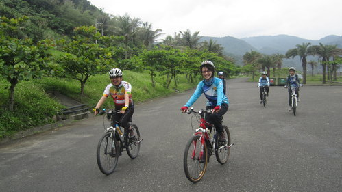
互稱Darling的雄哥和書慧姐！雄哥的機智幽默實在讓小的我佩服！腥羶而不下流的妙語更是一絕！！
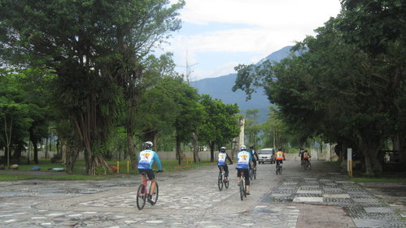
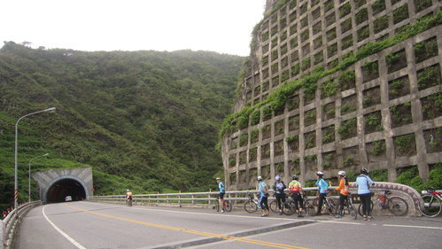
我就是在這個山洞之前的山洞摔車，之後我就得了山洞恐懼症！尤其是有大車從後面呼嘯而過時！！
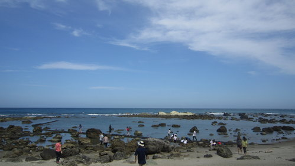
天空和海水的藍和諧共存！
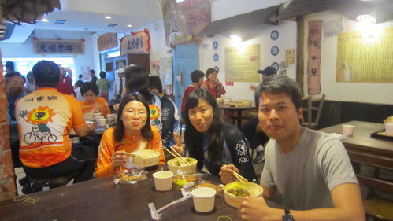
三個人的吃像都不是那麼好看就是了！！一下車開始，感受到花東的天氣跟高雄真的有差！！
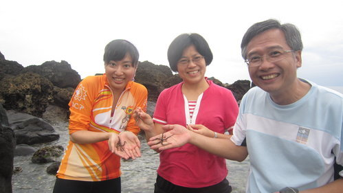
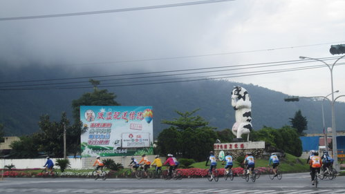
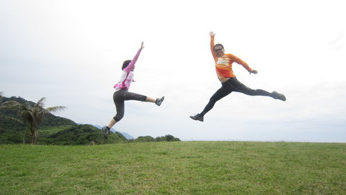
珠珠姐的姿勢有點狼狽！哈！
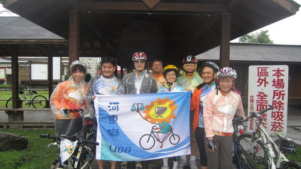
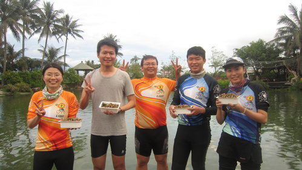
摸蜆仔團隊，摸完我整個腰酸背痛！而且竟然是摸最少的！！
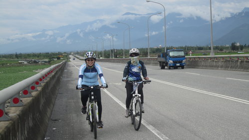
Swallow學姐辛苦了，這一趟，元元也是！（也包的太密不透風）
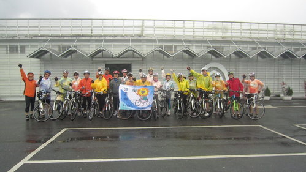
第一天下午要出發前，誓師大會，大家加油！！往立川漁場前進！
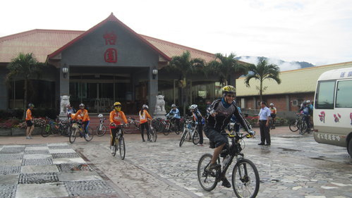
騎在前面的是廣昇學長，總是一馬當先，沈穩而內斂，也曾參與河東獅環島挑戰！！
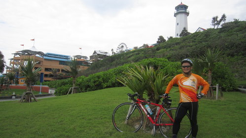
帥氣的小獅學長（這裡是....我怎麼沒印象）！
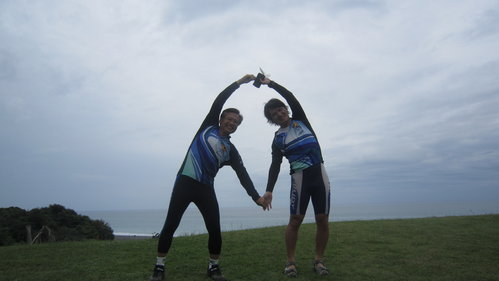
宗霖哥和小揚哥的山與海的愛的見證！！
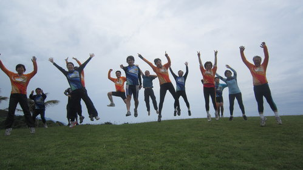
這張是我的最愛！！！！！！！！！！！！！
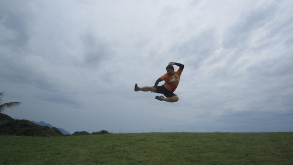
家偉在學六師弟的「輕功水上漂」！
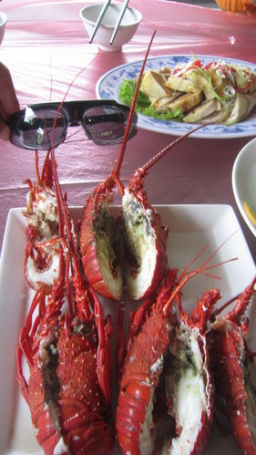
牛山呼庭吃的小龍蝦（其實肉不多耶）！
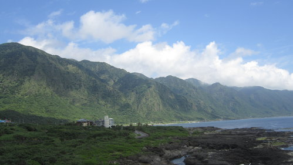
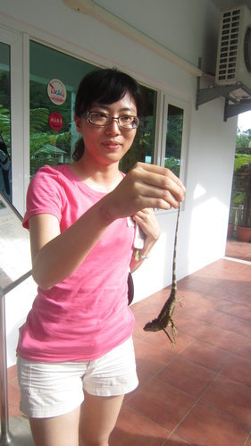
Leila學姐午餐沒吃飽，看到大蜥蜴竟然開始留口水，迅速身手一抓，我還來不及阻止，其他噁心畫面請大家自己想像！！
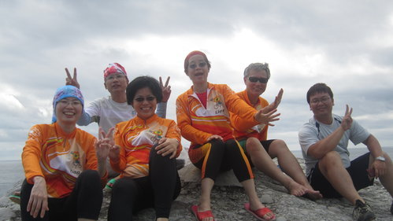
經過這次花東行，我不得不說大老闆真的很酷！不論是體力、精力或是品酒的功力！（這張的造型也很酷）
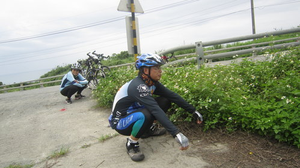
大家要知道，身為專業的單車騎士，在野外也是會為了找不到廁所而苦，所以我們宗霖學長就......然後貞秀學姐在後面好的不學學壞的！
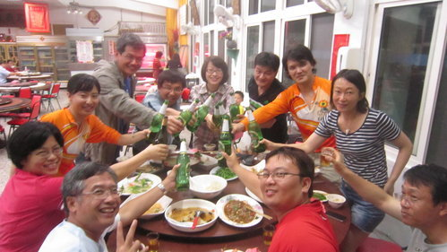
這就是晚餐加上青島啤酒！山哥、超哥和珠珠姐在比誰的臉比較紅！
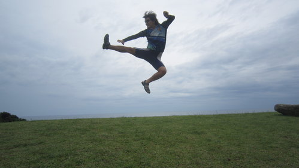
原來宗揚學長（小揚哥）身手也可以如此矯健！！
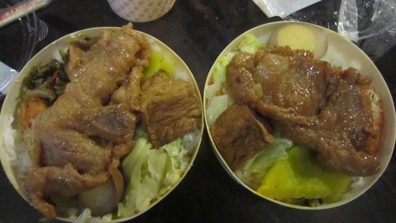
正宗悟饕池上飯包！因為看起來太好吃，隔壁阿婆還問我吃的是哪一種！！
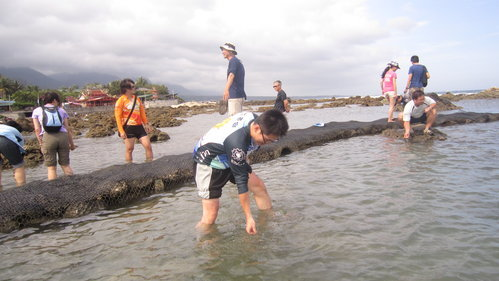
即將為人父的宗翰賣力的捉魚！
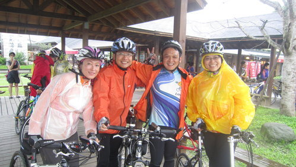
第一天下午雖然還下著小雨，大家還是給他硬騎下去（左起最正的珠珠姐、歌聲超美妙的宗霖學長、創社的小獅學長、成語接龍天后貞秀學姐）
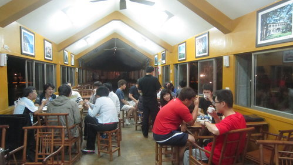
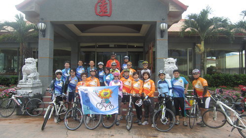
第二天一早匆匆吃完早餐，怡園出發！！
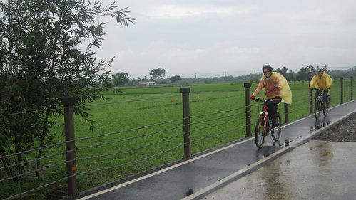
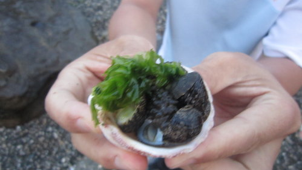
宗霖學長專業的介紹海邊撿拾而來的生物！很想炒燒酒螺來吃！
ps:本篇網誌也是在辦公室用熬夜寫判決的熱忱完成！現在晚上12：25分許，特此紀念！！
哈哈,寫的真好,讓我心好癢喔! 好久沒和您們一同騎車了,好懷念ㄝ.

再次表達羨慕之意。
Stephen真是熱血青年,網誌寫這麼好,難怪判決自不在話下~